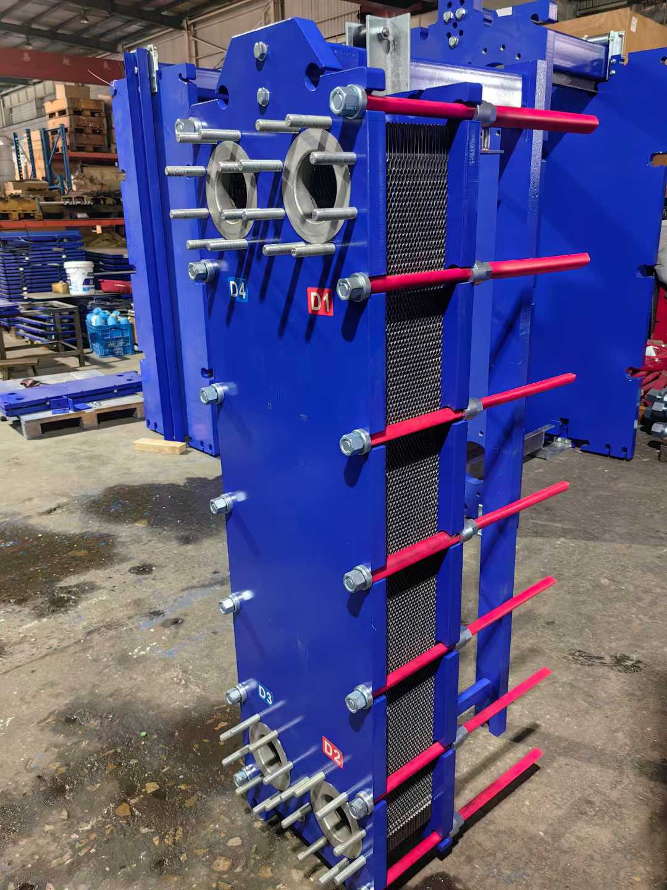
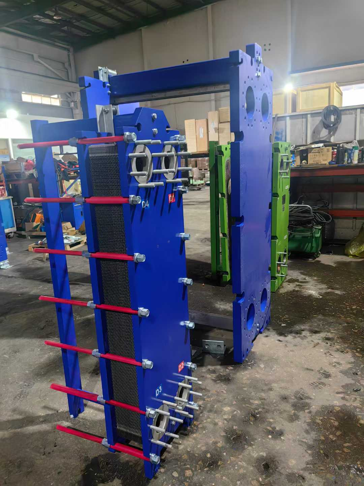
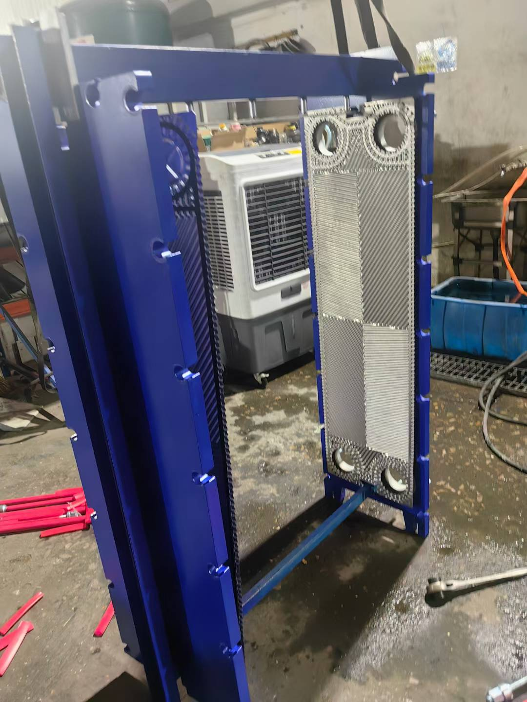
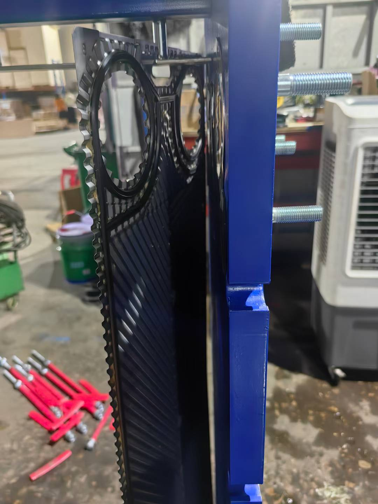
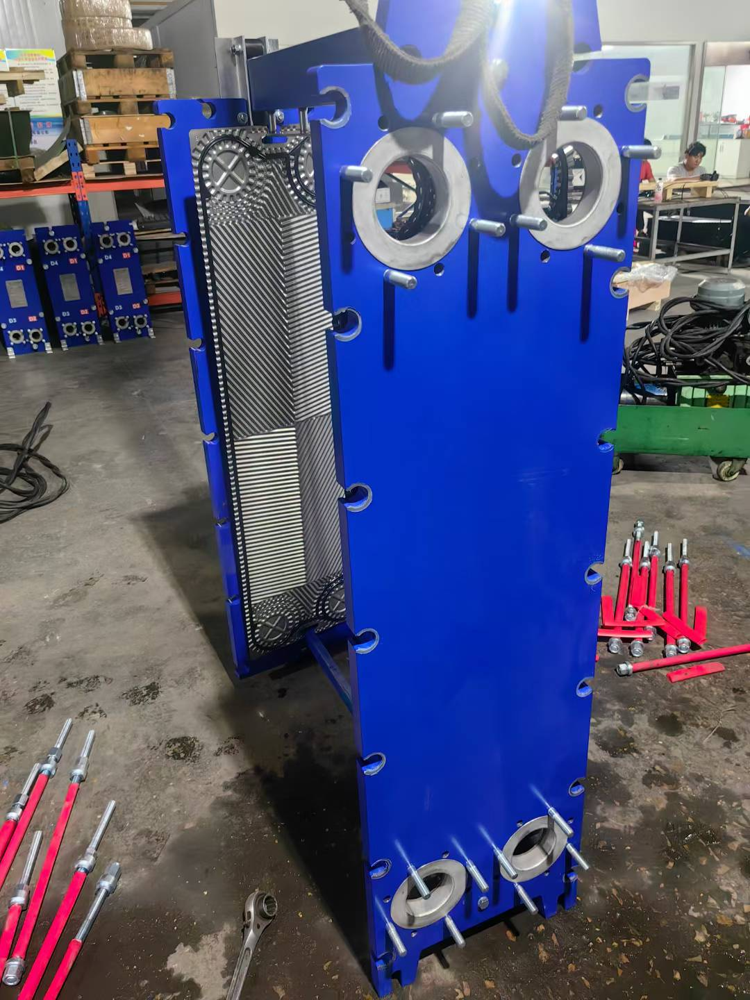

Tranter GX042 Plate Heat Exchanger in Shield Tunneling Machine Cooling Systems
Introduction
Shield tunneling machines (TBMs) are the core equipment of modern tunnel engineering. Their cutter drive systems, hydraulic thrust systems, and main bearing lubrication systems generate significant heat during operation. Without proper cooling, rising hydraulic oil temperatures lead to seal degradation, reduced system efficiency, and potential equipment failure.
The Tranter GX042 plate heat exchanger, with its compact plate design, superior thermal performance, and reliable pressure capability, serves as a critical heat exchange device in TBM cooling circuits and has been widely deployed in metro and cross-sea tunnel projects across China.

1. Tranter GX042 Overview
1.1 Product Positioning
The Tranter GX series is the flagship industrial plate-and-frame heat exchanger line. The GX042 is a mid-range model with a heat transfer area of 1–20 m² and DN50 connections, ideal for medium-flow liquid-to-liquid heat exchange applications.
The GX042 features chevron-pattern plate corrugation that creates strong turbulence between plates, achieving heat transfer coefficients far exceeding traditional shell-and-tube exchangers. At equivalent heat duty, the GX042's volume is 60–80% smaller.
1.2 Technical Specifications
| Parameter | Value |
|---|---|
| Model | GX042 |
| Plate heat transfer area | 0.042 m² |
| Total heat transfer area | 1–20 m² |
| Number of plates | 24–480 |
| Design pressure | 1.0 MPa (optional 1.6 MPa) |
| Design temperature | -20°C–150°C (rubber gaskets) / -20°C–260°C (EPDM) |
| Connection size | DN50 (4 inch) |
| Plate thickness | 0.5 mm / 0.6 mm |
| Plate material | 316L SS / 304 SS / Titanium |
| Gasket material | NBR / EPDM / Viton |
| Frame type | Single-side support (Stud Bolt) |
| Max flow rate | 45 m³/h |

1.3 Material Selection
TBM cooling systems involve two primary media: hydraulic oil and circulating cooling water. The GX042 offers multiple plate materials:
- 316L Stainless Steel: Ideal for fresh water cooling circuits, excellent corrosion resistance, high cost-effectiveness
- 304 Stainless Steel: Suitable for applications with low chloride ion requirements
- Titanium: Recommended when using groundwater or high-chloride water, superior corrosion resistance
For gaskets, NBR (Nitrile) is recommended for hydraulic oil service due to excellent oil resistance. EPDM is preferred for cooling water systems with better temperature and aging resistance.
2. Shield Tunneling Machine Cooling System Overview
2.1 Heat Source Analysis
The primary heat sources during TBM tunneling include:
| Heat Source | Origin | Cooling Requirement |
|---|---|---|
| Cutter drive main motor | High-power motor operation | Continuous cooling, oil temp ≤55°C |
| Hydraulic thrust system | Oil compression and pipe friction | Oil temp ≤50°C |
| Screw conveyor drive | Hydraulic motor drive | Oil temp ≤55°C |
| Erector hydraulic system | Hydraulic oil circulation | Oil temp ≤50°C |
| Main bearing seal | Lubrication oil friction | Oil temp ≤60°C |
| Transformer & electrical cabinet | Electrical component heating | Water temp ≤35°C |
A 6-meter-class TBM can generate 300–500 kW of total heat, requiring a reliable cooling system to dissipate heat outside the tunnel.
2.2 Cooling System Flow
TBM cooling systems typically employ a closed-loop water circulation scheme:
External cooling tower → Cold water pipe → TBM internal PHE → Return pipe → External cooling tower
↓
Hydraulic oil circuit / Gear oil circuit
Tranter GX042 serves critical roles in this system:
- Hydraulic oil cooler: Exchanges heat between hot hydraulic oil (60–70°C) from the power unit and cold water (25–30°C) from outside the tunnel, reducing oil temperature to working range (40–50°C)
- Gear oil cooler: Cools gear oil in the cutter drive gearbox, preventing high-temperature gear wear
- Main bearing lubricant cooler: Maintains bearing lubricant temperature within safe range, extending seal life

3. GX042 Selection and Configuration for TBMs
3.1 Heat Duty Calculation
Example: 6.5m diameter earth pressure balance (EPB) shield TBM:
Hydraulic Oil Cooling Circuit:
| Parameter | Value |
|---|---|
| Oil flow rate | 30 m³/h |
| Inlet oil temperature | 65°C |
| Target outlet oil temperature | 48°C |
| Cooling water flow rate | 25 m³/h |
| Inlet water temperature | 28°C |
| Required heat duty | ~180 kW |
Based on these parameters, 1 unit GX042 (12 m² area, 286 plates) meets this circuit's cooling requirement.
Gear Oil Cooling Circuit:
| Parameter | Value |
|---|---|
| Oil flow rate | 8 m³/h |
| Inlet oil temperature | 70°C |
| Target outlet oil temperature | 55°C |
| Cooling water flow rate | 10 m³/h |
| Required heat duty | ~60 kW |
1 unit GX042 (5 m² area, 120 plates) is sufficient.
3.2 Selection Advantages
Key advantages of selecting Tranter GX042 for TBM cooling:
- Compactness: The plate-type construction is 70% smaller than equivalent shell-and-tube exchangers — critical in the limited space inside a TBM
- Removable maintenance: TBMs operate continuously for months to years in tunnels. Cleanable plates are an irreplaceable advantage over shell-and-tube designs
- Modular expansion: Heat duty can be adjusted by adding or removing plates without replacing the entire unit
- Pressure safety: 1.0 MPa design pressure meets standard TBM hydraulic system requirements
- Parts availability: Tranter GX series plates and gaskets are stocked domestically, enabling quick replacement

4. Installation and Maintenance
4.1 Installation Guidelines
- Orientation: Install GX042 vertically to ensure full media filling between plates and prevent air pockets
- Pipe connections: Use flexible connectors at inlet/outlet to absorb vibration and thermal expansion
- Filtration: Install a 100μm filter upstream of the hydraulic oil inlet to prevent debris from clogging plate channels
- Temperature monitoring: Install temperature sensors at oil and water inlets/outlets, integrated into the TBM PLC system for real-time monitoring
- Bypass valve: Install a cooling water bypass valve to regulate flow during winter or low-load conditions, preventing overcooling
4.2 Periodic Maintenance
| Maintenance Item | Interval | Action |
|---|---|---|
| Visual inspection | Weekly | Check for leaks, frame bolt tightness |
| Differential pressure monitoring | Weekly | Record inlet/outlet DP; increasing DP indicates plate fouling |
| Plate cleaning | 3–6 months | Disassemble and clean scale and oil residue with specialized cleaners |
| Gasket replacement | 12–18 months | Replace all gaskets to prevent aging-related leaks |
| Plate inspection | 12 months | Inspect plates for corrosion perforation or cracks |
| Pressure test | 12 months | Hydrostatic test at 1.25× design pressure after reassembly |

4.3 Common Faults and Solutions
| Symptom | Possible Cause | Solution |
|---|---|---|
| Reduced heat duty | Plate fouling/clogging | Disassemble and clean plates |
| Cross-contamination | Plate perforation | Replace damaged plates |
| External leakage | Gasket aging/loose bolts | Replace gaskets or tighten bolts in diagonal sequence |
| Increasing pressure drop | Channel blockage | Backflush or disassemble and clean |
| Oil temperature not dropping | Insufficient cooling water/few plates | Increase water flow or add plates |
5. TBM Cooling System Optimization
5.1 Redundancy Design
It is recommended to configure the hydraulic oil cooling circuit with 2× GX042 in parallel, operating either as one-standby-one-active or each carrying 50% load. When one unit requires cleaning, the TBM can continue operation, ensuring tunneling continuity.
5.2 Variable Frequency Control
Install VFDs on cooling water pumps to automatically adjust water flow based on hydraulic oil outlet temperature. In winter with low water temperatures, reducing pump frequency yields significant energy savings while preventing overcooling that increases oil viscosity.
5.3 Water Quality Management
TBM cooling water typically comes from external municipal supply or groundwater. When using groundwater:
- Chloride > 200 mg/L: plates must be titanium
- Total hardness > 300 mg/L: install water softener to prevent scaling
- Turbidity > 5 NTU: install multi-stage filtration

Conclusion
The Tranter GX042 plate heat exchanger, with its high thermal efficiency, compact structure, and removable maintenance capability, is an indispensable key component in TBM cooling systems. Selection should consider heat duty requirements, media characteristics, installation space, and maintenance accessibility.
For heavy-duty equipment like shield tunneling machines operating under high temperatures, pressures, and loads, proper cooling system design directly impacts equipment reliability and construction efficiency. The Tranter GX042, with its proven plate technology and flexible modular design, has been validated across numerous tunnel projects worldwide — making it a preferred choice for TBM cooling system selection.
For more information on Tranter GX042 technical data or selection assistance, please contact us for professional guidance.